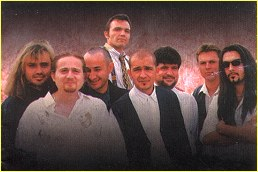

|
-==
ЧЛЕНОВЕ
-- КРАТКА
ИСТОРИЯ -- ИНТЕРВЮТА
==-
 Те са известни, богати и талантливи. Те карат мощни мотори и коли и
всички се обръщат след тях. Те са звезди от ефира, без да са водили и
секунда "По света и у нас". Те са по-популярни и от най-известните
политици, спортисти, артисти. Обичат ги еднакво и циганите от "Факултето",
и българите в Чикаго. Момичетата от първите редове късат блузите си, за
да ги забележат. Други направо припадат при появата им.
Те са известни, богати и талантливи. Те карат мощни мотори и коли и
всички се обръщат след тях. Те са звезди от ефира, без да са водили и
секунда "По света и у нас". Те са по-популярни и от най-известните
политици, спортисти, артисти. Обичат ги еднакво и циганите от "Факултето",
и българите в Чикаго. Момичетата от първите редове късат блузите си, за
да ги забележат. Други направо припадат при появата им.
Те са "Ку-ку бенд".
Това е бандата на Слави. След всеки концерт не пропуска да обяви имената
на великолепната деветка - Евгени Димитров-Маестрото (клавишни), Георги
Милчев-Годжи (бас китара), Евгени Йотов (саксофон), Илия Илиев (кларинет),
Йордан Йончев-Гъмзата (тропмет), Венелин Венков (ударни), Николай Арабаджиев-
Шерифа (китара), Цветан Недялков (китара) и Лили Йончева (перкусии).
Макар да остават в сянката на Дългия, всеки от тях е талант. Слави дълго
побдирал групата, за да стигне до този състав. Те са съвършени, други няма,
категоричен е бащата на бенда. "Ку-ку бенд" се появи на сцената на втората
национална "Ку-ку академия" през 1993. От първия състав верни на каузата
са останали само саксофониста Евгени Йотов и кларнетиста Илия Илиев.
Плевенската музикална гимназия спокойно може да се прекръсти на "Ку-ку
бенд". Чиновете й са търкали Слави, Годжи, Маестрото, Иво Казасов и
Красимир Кирилов. Последните двама напускат бенда и в момента са в "Акага".
Цяла България знае за любовта на Слави към виолата и как се е дипломирал
семестриално в музикалната академия. После всички се разпръсват по различни
краища на България, че и на света. Годжи е свирил по фериботи в Норвегия
и Дания, участвал е в различни програми в Германия и Англия. Маестрото
припечелвал като студент в пианобара на хотел "Родина".
Евгени Йотов работил по кораби. Кларнетиста Илия Илиев изкарал два
месеца в Израел с танцов ансамбъл. Там го заварила и войната в Персийския
залив. Наложило се за 4 дни да се прибере в България.
Слави пък свири в симфоничния оркестър на БНР. Оттам отива в студентското
предаване "Ку-ку". Музикантската душа не изтрайва обаче и започва да прави
песнички за предаването. Един по един се сеща за старите си приятели от
Плевен и консерваторията и ги привиква за записи.
"Бяхме състуденти със Слави. Той и Илийката работеха заедно в симфоничния
оркестър на радиото. По приятелска линия се събирахме в един клуб и така от
дума на дума се роди идеята за музикална формация", спомня си днес Евгени
Йотов. "Както си записвахме песнички за "Ку-ку", дойде идеята, че е хубаво
към предаването да се направи една формация. Първоначално беше малко
оркестърче за фон на скечове. После дойдоха "Ку-ку-академията", турнетата,
албумите", присеща се и Илия Илиев.
Така се ражда истинският "Ку-ку бенд". В него влизат Ангел Заберски-син,
Цветозар Каракдиев, Радосвет Кукудов, Красимир Желязков, Георги Пенчев,
Красимир Кирилов, Евгени Йотов и Илия Илиев. Този състав издава през 1993
и първия култов албум на бандата "Ръгай чушки в боба". Той веднага става
скандален тъй като текстовете му разбунтуват пуританския дух на все още
задръстения българин. Хитове стават песни като "Ще ти скъсам гъза", "Мама
на татко не дава", "Вчера в детската градина". Песните се изпълняват от
Слави, Август Попов, Камен Воденичаров и Стефан Вълдобрев. Постепенно обаче
през годините бандата се разпилява. Заберски-младши отива да работи в
Германия. Слави кани за негов заместник Евгени Димитров-Маестрото.
"Със Слави сме приятели от ученическите години в Плевен. Но през 1993г.
се видяхме случайно в един джазклуб. Там той ме покани да работя в "Ку-ку",
връща лентата Маестрото. Слави дал касетата "Ръгай чушки в боба" на
Евгени и го попитал дали може бързо да ги разучи. "Чух ги, справих се и
реално свирих на промоцията на албума. После тръгнах и на първото турне",
разказва Евгени.
Маестрото води Цветан Недялков и Красимир Желязков-Герасим. Цецо пък
кани Венелин Венков и Николай Арабаджиев.
През 1997г. Илия моли Гъмзата да го замества докато е на турне в чужбина.
Слави обаче го харесва и така и Гъмзата става член на групата.
На 17 юни 1995 се появява и Годжи. Пак по покана на Маестрото. С тази
разлика, че е стар приятел на Слави. На 4 юли 1995г. явлението Годжи
дебютира в националния ефир на концерта "България за Америка", който се
излъчва пряко от Зала 1 на НДК. Годжи се включва активно и в подготовката
на "Жълта книжка".
Албумът пак предизвиква скандал - обвиняват ги в гавра с руския химн.
През 1997г. към бандата се присъединява и барабанистът Калин Вельов.
Всички са единодушни, че той е бил най-самобитния между тях. Въпреки реда
и дисциплината само за него Слави прави компромиси - свири в много групи
и идва когато си иска. Мокрият сън на всички ученички - Вельов решава обаче да учи в консерваторията
в Холандия. И никой, дори и Слави не могъл да го спре. Изпратили го директно
след концерт в Пловдив. Дълго се сбогували и накрая Калин станал внезапно,
подпалил колата и казал: "Пичове, ако не тръгна сега, оставам с вас завинаги".
Няколко месеца по-късно на стола на Калин сяда Лили Йончева. Тя е
най-младият член на бандата и първата жена в него. Слави я нарича стопанката на бенда.
 Докато в "Ку-ку" и "Каналето" бендът се появяваше епизодично на сцената,
истинския си ренесанс преживява в "Хъшове". Тогава идват всекидневните
репетиции. Цяла България пее по площадите "Къде си вярна, ти, любов народна" и "Вятър
ечи, Балкан стене". Идеята за възрожденските песни е на Любен Дилов-син. Един
ден дошъл в офиса и казал: "Момчета, ситуацията назрява, давайте да правим
революционни песни". Това било през есента на 1996г. Докато направим
аранжиментите, то си стана време за революция, казва сега Маестрото. Докато в "Ку-ку" и "Каналето" бендът се появяваше епизодично на сцената,
истинския си ренесанс преживява в "Хъшове". Тогава идват всекидневните
репетиции. Цяла България пее по площадите "Къде си вярна, ти, любов народна" и "Вятър
ечи, Балкан стене". Идеята за възрожденските песни е на Любен Дилов-син. Един
ден дошъл в офиса и казал: "Момчета, ситуацията назрява, давайте да правим
революционни песни". Това било през есента на 1996г. Докато направим
аранжиментите, то си стана време за революция, казва сега Маестрото.
С "Хъшове" идва и "Часът на бенда". Първоначално рубриката се именува
"Малка нощна музика", но някой от сценаристите предложил "Часа на бенда". Вече никой
не си спомня кой е той, но всички приели с овации. В минутите за музика
феновете на "Хъшове" опознаха таланта на всеки от групата. В "Шоуто на Слави"
пък Годжи разкри актьорските си заложби.
Никой не може да определи точно стилът на бенда. Затова и не е група за
всеки музикант. Има обаче едно специфично звучене. Когато "Ку-ку бенд" забие първите
акорди, всеки може да познае, че това е той. Всички трябва да са винаги нащрек -
никой не знае кога Слави ще каже по време на предаването "Дай сега едно фонче -
ранна утрин, птички и девствена мома на нивата".
Момичетата от "Бонд" били втрещени от професионализма им. После признали,
че такова удоволсвтие не са изпитвали на сцената.
След концерта си в Албена оркестърът от "Ъндърграунд" и "Ку-ку бенд" направили
уникално шоу в градината на ресторант "Милев". Сърбите изпаднали в дуенде и се
пръснали да свирят до двора. Бендът също не се стърпял и грабнал
инструментите.
"Ноу Ейнджълс" за първи път пяха на живо в "Шоуто на Слави", откакто
съществува групата. Въпреки предварителните уговорки за плейбек, като засвирили първото
парче, момичетата страшно се изкефили и направо запяли. "Антик" също не се
колебали да пеят на живо. След като чули аранжиментите дори не се наложило репетиция и
направо започнали "Опа, опа".
"Големите музиканти си личат по това, че са много разбрани и с тях нямаме
проблеми. Обикновено с тези, които се надуват и се правят на звезди не се
получава", издава тайната Маестрото.
За зрителя обаче остават скрити 8-часовите репетиции всеки ден. Никой не
си е помислил и да се олаква. Защото всички работят с кеф. Всъщност те не приемат
това като работа, а като най-върховното изживяване в живота си. Ние сме приятели,
скандали между нас няма, защото има правила, казват музикантите.
© 2001
СлавиWeb. Всички права запазени. |